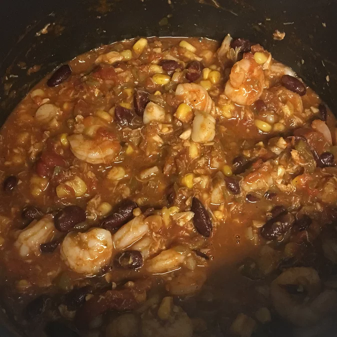

Seafood Chili
Seafood Chili

Description:
A twist on classic chili with fresh veggies and lots of seafood, seasoned with chili and lime and lots of garlic.
Ingredients:
- 1/4 cup butter
- 4 frsh tomatoes diced
- 2 chopped bell peppers
- 2 crushed garlic heads
- 3 chopped green onions
- 1 (8 ounce) can kidney beans
- 1 (8 ounce) can of baby corn
- 2 stalk celery
- 1 tablespoon chili powder
- 1(16 ounce) can whole peeled tomatoes
- half lb. cooked crabmeat
- 1 (7 oucnce) can hearts of palm
- 1 pound jumbo shrimp
- pound of sea scallops
Directions:
- Melt butter in large stockpot over medium-low heat; add tomatoes, bell peppers, garlic, and green onions. Cook and stir frequently until tomatoes have nearly liquefied, 30 minutes to 1 hour.
- Stir kidney beans, baby corn, and celery into the tomato mixture; add chili powder and lime juice and season with salt and ground black pepper. Cover and cook on low, stirring occasionally, until celery is soft but still has texture, about 1 hour.
- Stir crab meat and canned tomatoes with liquid into kidney bean mixture, breaking up tomatoes in thirds with a wooden spoon. Season with salt and pepper; add brown sugar if chili tastes too salty.
- Stir shrimp, scallops, and hearts of palm into chili; cook until shrimp are bright pink on the outside and the meat is opaque, 2 to 3 minutes.